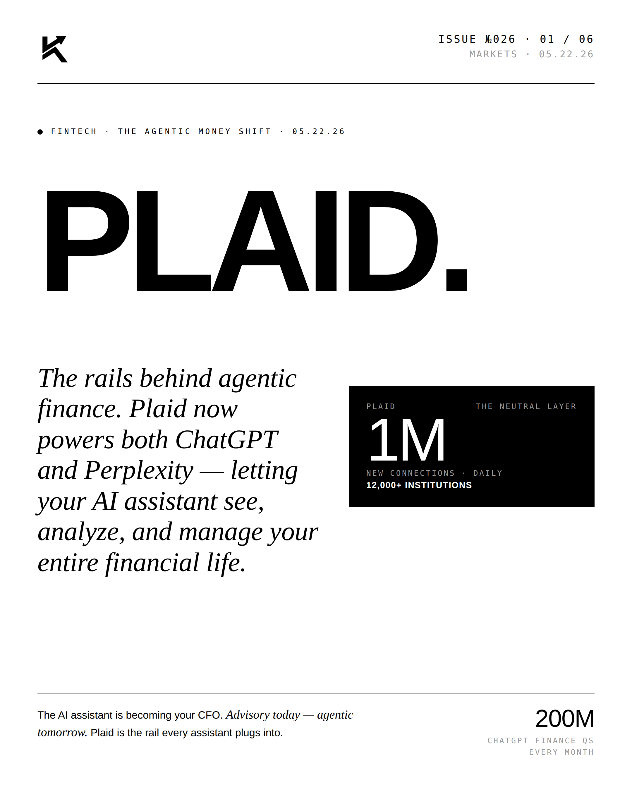
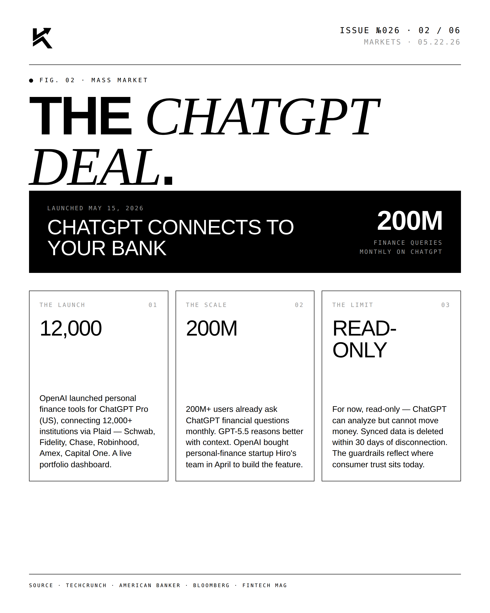
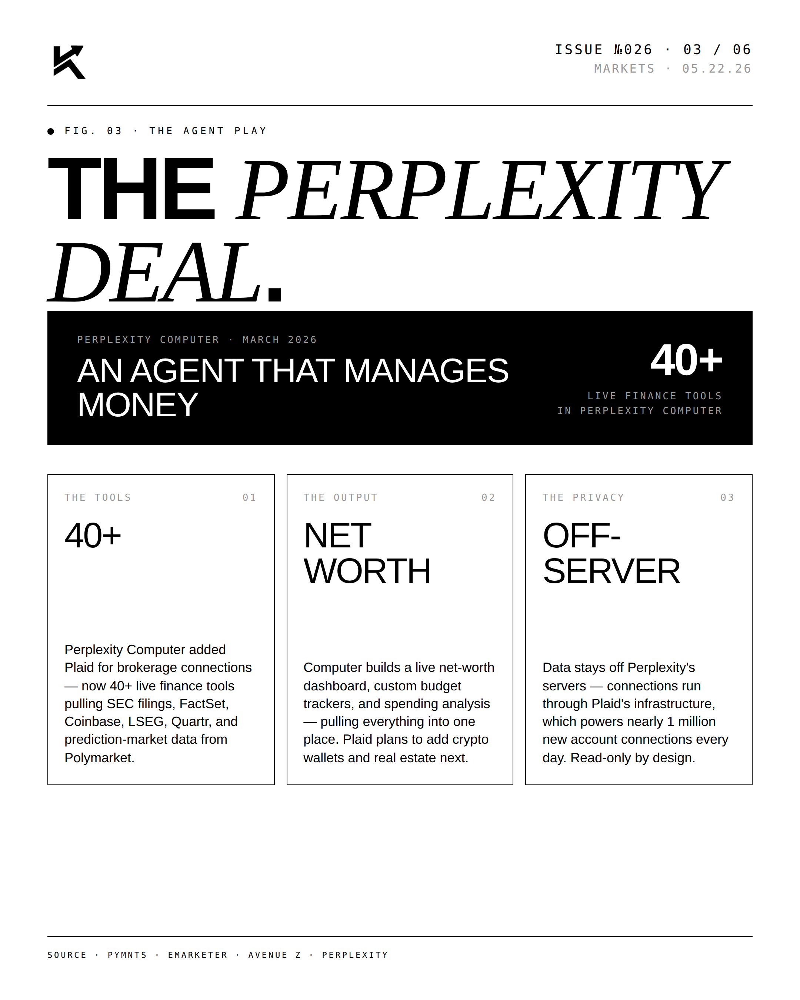
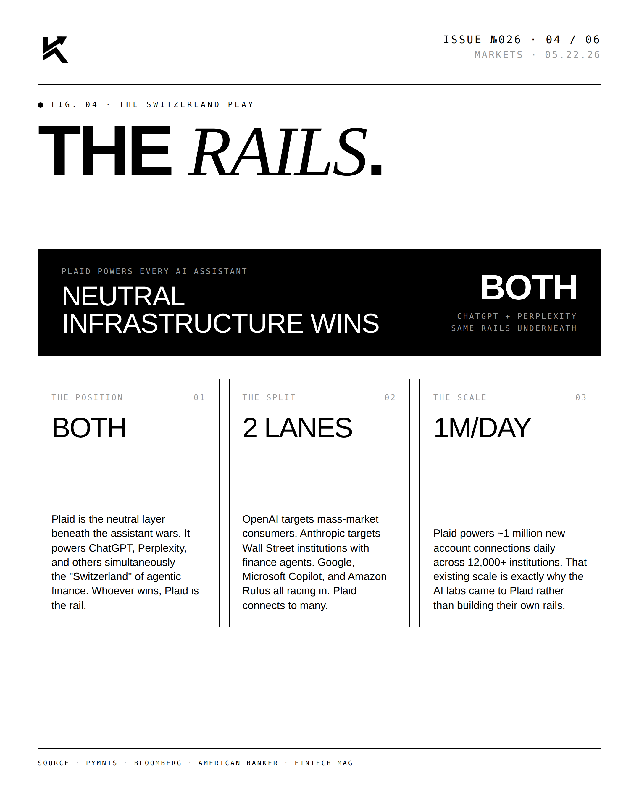
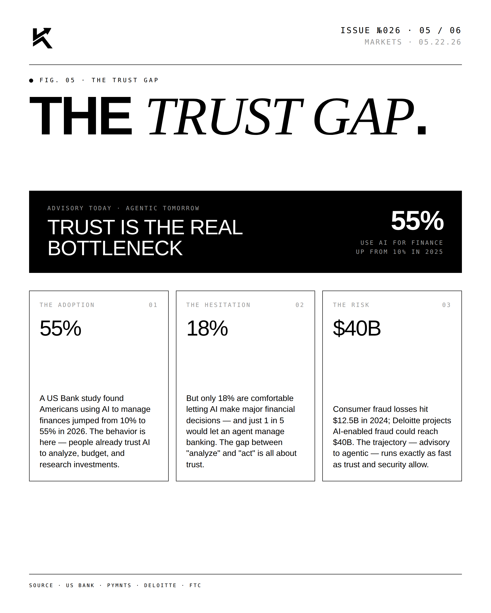
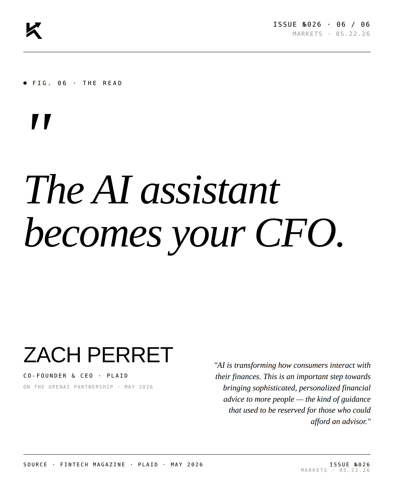

Plaid.
Plaid now powers both ChatGPT and Perplexity — the neutral rail letting AI assistants see, analyze, and manage your entire financial life. 1M new connections daily across 12,000+ institutions.

The Lead.
The AI assistant is becoming the CFO. Plaid is positioning as the neutral connectivity layer every assistant plugs into — advisory today, agentic tomorrow. ChatGPT alone fields an estimated 200M finance questions a month, and Plaid sits underneath the answer.




"The AI assistant
becomes your CFO."ZACH PERRETCo-Founder & CEO · Plaid · 05.22.26
"AI is transforming how consumers interact with their finances. This is an important step towards bringing sophisticated, personalized financial advice to more people — the kind of guidance that used to be reserved for those who could afford an advisor." — Zach Perret, Plaid.

Disclosure
The author is a Limited Partner in 1789 Capital, which holds positions in Plaid and Perplexity, both referenced in this post. Personal commentary and editorial analysis. Not investment advice, not an offer or solicitation.